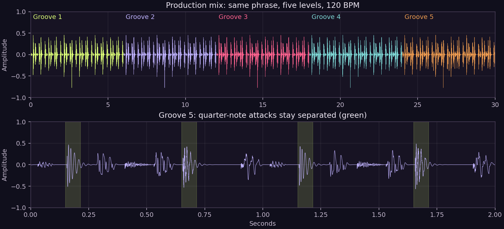
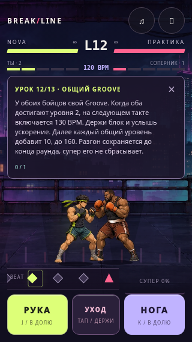
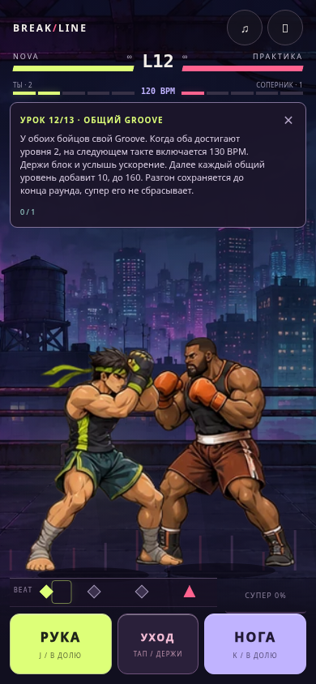
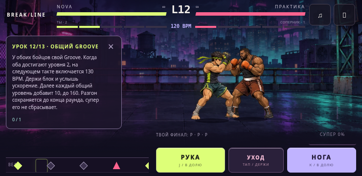
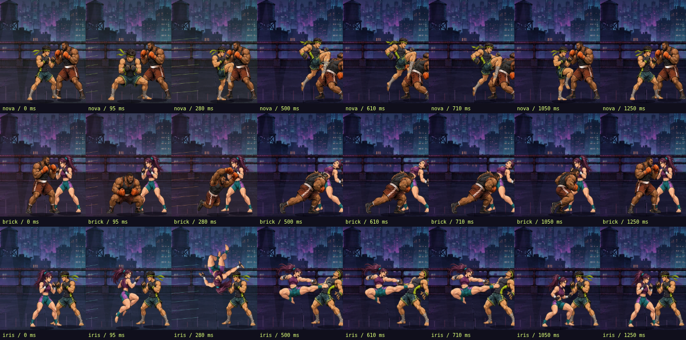

Оригинальная короткая D / Phrygian аранжировка: сильная четверть, суб + средний бас, сухие ударные и короткие верхние слои. Внешних сэмплов и голосов нет.
Оба достигли уровня 2 → 130 BPM; 3 → 140; 4 → 150; 5 → 160. По +10 на следующий полный такт. Открытый темп сохраняется до конца раунда. Супер тратит отдельный заряд, Groove сохраняет. Новый раунд начинает со 120 без перезапуска музыкальной фразы.
Быстрое сравнение: СВОБОДНАЯ ПРАКТИКА → МАНЕКЕН → GROOVE 1…5. Кнопка задаёт уровень обоим; ступени темпа включаются по тактам. АВТО возвращает обычное накопление, достигнутый темп остаётся до перезапуска.
30 секунд: по 6 секунд уровня 1 / 2 / 3 / 4 / 5, одинаковый фрагмент при 120 BPM для сравнения аранжировки. Production-микшер, без нормализации громкости. Разгон слушайте непосредственно в игре. Это офлайн-рендер, не запись Android.

| Groove | Пик (1 = 0 dBFS) | RMS |
|---|---|---|
| 1 | 0.772 | 0.0953 |
| 2 | 0.772 | 0.0953 |
| 3 | 0.772 | 0.0955 |
| 4 | 0.772 | 0.0965 |
| 5 | 0.772 | 0.0968 |
Отдельный басовый вклад RMS 0.0659 (сравнение с отключённым басовым выходом). Пик контрольного микса с суперами 0.877. Эти измерения проверяют запас громкости и наличие баса, а не приятность музыки на слух.



Всего 13 уроков. Этот завершается после фактического 130 BPM, не после одной установки целевого значения. Браузер также проверяет супер, паузу/mute и native-touch при 160 BPM.
NOVA · 130 BPM · 2 супер · 5 уходов
BRICK · 140 BPM · 2 супер · 8 уходов
IRIS · 130 BPM · 1 супер · 6 уходов
Все три победили с 3 разными финалами и суперударом. Автоматическая стратегия читает состояние и нажимает настоящие UI-кнопки; прямых боевых команд нет. Видео Chromium немое, не запись человека/Android.
540 кадров / 18 секунд со звуком и 0,5× без звука. Поставленный показ: учебный заряд заполнен, соперник не атакует. Аудио восстановлено тем же движком из событий.



13 002 правил, 11 загрузчика, 128 боя, 65 практики, 38 runtime и 10,576 транспорт/Groove/audio-утверждений. 3 native-touch победы, 9 комбо, 3 супера, все 13 уроков всеми героями. Полная игра/main не изменяются. Физический Android, акустика телефона и оценка звучания человеком не проверены.
rules · loader · browser · practice · runtime · groove · live-bouts · reel
HTML SHA-256: 7dca01a8a1c4bef2b676b5b41c503f032e79ac456952caf2e6fd5ec7dc2bd7db. Все восемь отчётов привязаны к этому HTML. Ветка afterhours-overdrive. Публикацию подтверждает PROJECT_STATUS.md.